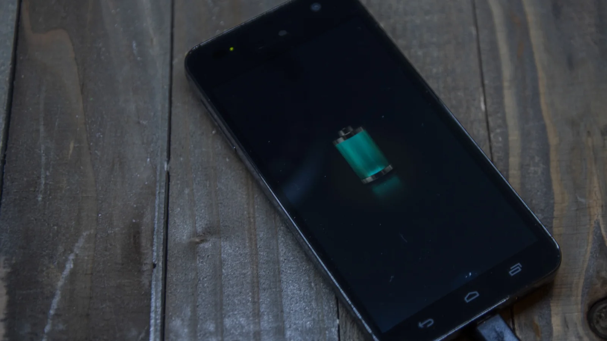

Phone charging myths: 100%, overnight charging and battery health
You do not need to organize your whole day around a battery percentage. Focus on heat, suitable charging equipment and the options your phone actually supports.

Must I drain the phone to zero?
No. Modern phone batteries do not need a full discharge before charging. Google’s Android guidance explicitly says you do not need to teach a phone its capacity by repeatedly going from full to empty.
Is an overnight charge always bad?
Apple says iPhone stops charging when full and can be left connected overnight. That does not make heat or a damaged cable harmless. Charge in a ventilated place and use equipment suitable for your phone.
Is 80% a rule for everyone?
A supported charge limit can reduce time at high charge, but it leaves less usable charge for the day. Choose a limit that suits your routine. If you need full runtime for travel, charging to 100% is an ordinary use case, not a failure.
Why does charging sometimes slow down?
Phones manage charging rather than taking the charger’s maximum power continuously. Apple describes reducing charging current near full charge. Temperature management and supported optimization features can also change the schedule; check the phone’s explanation before blaming the cable.
What matters most?
Avoid leaving the phone in a hot car or direct sunlight while charging. Apple warns that temperatures above 35°C can permanently damage battery capacity. For extended storage, follow your maker’s guidance; Apple recommends about half charge.
Battery health describes wear over time; battery level describes the charge left now. A saver mode helps today, while a charging limit targets wear. Neither guarantees a particular number of extra years.
Sources: Apple: charging and maintenance · Apple: maximizing battery performance · Apple: optimized charging · Google: charging a Pixel · Google: Android battery care · Photo: Circe Denyer / CC0
05.10.2026